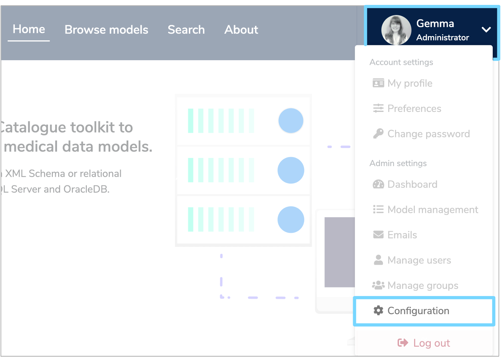
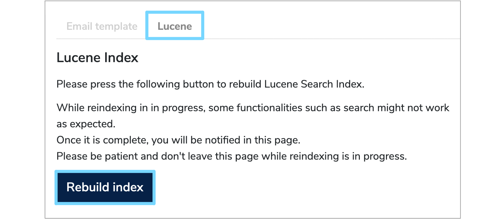

Administration
Checking version information¶
Inside the web interface, the Plugins and Modules tab on the administrator dashboard provides information about the loaded components of the Mauro installation. The first list, Plugins, provides a list of names and versions of components which integrate with known plugin hooks. For example Importers, Exporters and Email Providers. The Modules list below provides a more comprehensive account of all Java / Grails components installed, including system libraries. Each Module may include one or more Plugins.
To provide automated reporting, the API call behind this dashboard may be called separately. The GET urls below will return lists of plugins,
for each named type:
The endpoint below will return the list of modules:
Backing up the database¶
In order to back up the data from a running Mauro system, it is usually sufficient to take a simple backup of the underlying Postgres database,
which can be achieved through standard Postgres utilities (for example, using pg_dump).
Within the Docker repository, a simple script in postgres/bin/snapshot-data.sh can be used within the docker container to take a copy of the
underlying postgres database. This creates a file in a new folder /database on the container which can be copied back out to the host machine.
Alternatively, you can run an exec command directly from the host machine. For example the command listed below:
1 | |
This will execute the pg_dump command on the postgres container, connecting to the maurodatamapper database. The result will be zipped using the
gzip command, creating a file with today's timestamp on it.
Backup requirements vary, but a typical use-case is to combine one of the backup commands listed above with a script to manage regular backups at timed intervals and deleting old backups once a certain period has passed. Example scripts which may be adapted can be found on the official Postgres Wiki here.
Re-building the search index¶
The search index improves the performance of searching and this content is stored in-memory (and persisted to files on disk at suitable intervals). In some places in the Core, it may also be used to speed up access to particular model contents.
The index is built using Apache Lucene but managed in the code through Hibernate. This means that it is always kept in sync with the database contents, but it can be re-indexed if necessary. For example if searching provides incorrect or inconsistent results.
Administrators may rebuild the Lucene index through the user interface. To do this, click the white arrow by your user profile to the right of the menu header. Select 'Configuration' from the dropdown menu.

This will take you to configuration page where you can click the 'Lucene' tab and then select 'Rebuild Index'.

Please do not leave the page whilst reindexing is in progress. The time required is dependent on the number of models saved in the system, but may take between 5 and 10 minutes for a large system.
Alternatively, an API call may be made: see here for details. This POST call may be made with an
existing session cookie, by passing username / password parameters as part of the call, or by passing an API Key. Only those with system
administrator role may perform this action.
The contents of the search index can be hard to inspect for debugging purposes! We use a tool called Marple but be sure to use a compatible version.
Docker administration¶
Cleaning up docker¶
Continually building docker images will leave a lot of loose snapshot images floating around, occasionally make use of:
- Clean up stopped containers -
docker rm $(docker ps -a -q) - Clean up untagged images -
docker rmi $(docker images | grep "^<none>" | awk "{print $3}") - Clean up dangling volumes -
docker volume rm $(docker volume ls -qf dangling=true)
You can make life easier by adding the following to the appropriate bash profile file:
1 2 3 | |
Remove all stopped containers first then remove all tagged images.
A useful tool is Dockviz,
ever since docker did away with docker images --tree you can't see all the layers of images and therefore how many disconneected images you have.
Add the following to the appropriate bash profile file:
1 | |
Then in a new terminal you can run dockviz images -t to see the tree.
The program also does dot notation files for a graphical view as well.
Multiple compose files¶
When you supply multiple files, docker-compose combines them into a single configuration.
Compose builds the configuration in the order you supply the files.
Subsequent files override and add to their successors.
1 2 3 4 5 | |
We recommend adding the following lines to the appropriate bash profile file:
1 2 | |
Debugging and advanced configuration¶
Here we present some useful hints for extending or customising the Docker setup for different configurations or use cases:
Development file override
The docker-compose.dev.yml can be used to override the standard docker-compose.yml file for development. In its initial configuarion,
it opens up the ports in the Postgres container for manual connection from the host machine. This .dev compose file rebuilds all of the images,
whereas the standard compose file and .prod versions do not build new images.
Make use of the wait_scripts
While -links and depends_on make sure the services a service requires are brought up first Docker only waits till they are running NOT till they
are actually ready. The wait scripts provided test responses on given ports to make sure that a given service is actually available and ready to
interact.
Use COPY over ADD
Docker recommends using COPY instead of ADD unless the source is a URL or a tar file which ADD can retrieve and/or unzip.
Use of ENTRYPOINT & CMD
- If not requiring any dependencies then just set
CMD ["arg1", ...]and the args will be passed to theENTRYPOINT - If requiring dependencies then set the
ENTRYPOINTto the wait script and theCMDtoCMD ["process", "arg1", ...]
Try to keep images as small as possible
As a general rule, we try to use the base images (e.g. of Tomcat, Postgres) and install additional packages at runtime or start-up. This increases portability and cuts down on disk usage when deploying updates.
Exposing ports
Exposing ports to other services must be carefully considered, to avoid unnecessary security vulnerabilities
If the port only needs to be available to other docker services then use expose.
If the port needs to be open to the host machine or beyond, then use ports.
If the ports option is used this opens the port from the service to the outside world,
it does not affect exposed ports between services, so if a service (e.g. postgres with port 5432) exposes a port
then any service which used link to postgres will be able to find the database at postgresql://postgres:5432